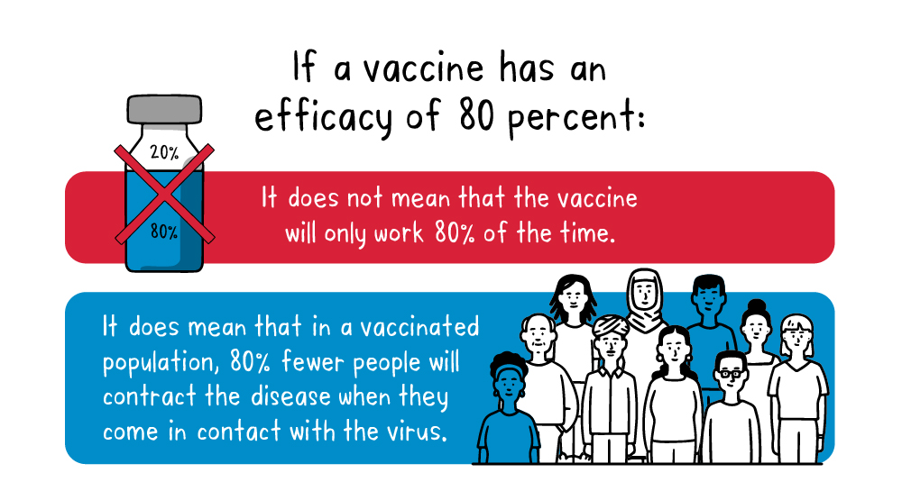

Behind the scenes of COVID-19
Definition of Vaccine Efficacy
The efficacy of an arbitrary vaccine is defined by various parameters. A blog post published from the World Health Organization (commonly known as WHO) describes this in much greater detail.

Vaccine efficacy (VE) requires two sample groups for calculation. Although unequal group sizes are acceptable, best practice is to make the sample sizes as equal as possible. The control and test groups will be prescribed placebo and vaccine, respectively.
In the context of the protocol, the key consideration is the extent of deviation between the actual and the stipulated group sizes. The discrepancy in group sizes will later be evaluated using chi-sqaure test.
\[ \mathrm{VE} = 100 \dfrac{\pi_P - \pi_V}{\pi_P} \]
- \(\pi_P\): Proportion of subjects infected after receiving the placebo.
- \(\pi_V\): Proportion of subjects infected after vaccinated.
By setting the value of \(\pi_P = 0.8\) and \(\pi_V = 0.72\), the VE can be calculated as \(10\%\). Notice that VE is theoretically between \(-\infty\) and \(100\).
For modeling, it is commonly preferred to use the numerical range between \((0,1)\).
\[ \theta = \dfrac{\pi_V}{\pi_P + \pi_V} = \dfrac{1-\frac{\mathrm{VE}}{100}}{2-\frac{\mathrm{VE}}{100}} \]
The beta distribution is likely befitting for the modeling of \(\theta\) which will later be discussed in detail.
Design of the Clinical Trial
After the outbreak of the COVID-19, FDA of the United States has released a guidance document123 for the design of clinical trials for COVID-19 vaccines. The COVID-19 Emergency Use Authorization (EUA) has required additional safety considerations and efficacy data for the vaccine to be approved with interim analysis.
The following requirements are extracted from the guidance document:
A point estimate for a placebo controlled efficacy trial of at least 50%, with a lower bound of the appropriately alpha-adjusted confidence interval around the primary efficacy endpoint point estimate of >30%
The value \(30%\) was widely accepted as the null hypothesis for this clinical trial.